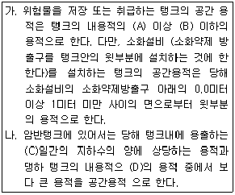
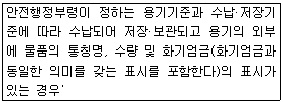
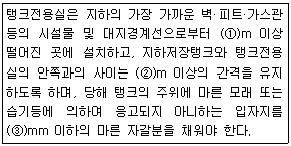

위험물기능사 (2013-04-14 기출문제)
1과목: 화재 예방과 소화방법
1. 지정수량의 몇 배 이상의 위험물을 취급하는 제조소에는 화재발생시 이를 알릴 수 있는 경보설비를 설치하여야 하는가?
- 5
- 10
- 20
- 100
(정답률: 81%)

2. 이산화탄소의 특성에 대한 설명으로 옳지 않은 것은?
- 전기전도성이 우수하다.
- 냉각, 압축에 의하여 액화된다.
- 과량 존재시 질식할 수 있다.
- 상온, 상압에서 무색, 무취의 불연성 기체이다.
(정답률: 82%)
3. 이동탱크저장소에 의한 위험물의 운송에 있어서 운송책임자의 감독 또는 지원을 받아야 하는 위험물은?
- 금속분
- 알킬알루미늄
- 아세트알데히드
- 히드록실아민
(정답률: 90%)
4. 위험물안전관리법령에 근거하여 자체소방대에 두어야하는 제독차의 경우 가성소오다 및 규조토를 각각 몇kg이상 비치하여야 하는가?
- 30
- 50
- 60
- 100
(정답률: 69%)
5. 인화점이 낮은 것부터 높은 순서로 나열된 것은?
- 톨루엔 - 아세톤 - 벤젠
- 아세톤 - 톨루엔 - 벤젠
- 톨루엔 - 벤젠 - 아세톤
- 아세톤 - 벤젠 - 톨루엔
(정답률: 67%)
6. 화재시 이산화탄소를 배출하여 산소의 농도를 12.5% 로 낮추어 소화하려면 공기 중의 이산화탄소의 농도는 약 몇vol% 로 해야 하는가?
- 30.7
- 32.8
- 40.5
- 68.0
(정답률: 58%)
7. 위험물안전관리법령상 고정주유설비는 주유설비의 중심선을 기점으로 하여 도로 경계선까지 몇m이상의 거리를 유지해야 하는가?
- 1
- 3
- 4
- 6
(정답률: 48%)
8. 위험물 옥외저장소에서 지정수량 200배 초과의 위험물을 저장할 경우 보유공지의 너비는 몇 m이상으로 하여야 하는가? (단, 제4류 위험물과 제6류 위험물이 아닌 경우)
- 0.5
- 2.5
- 10
- 15
(정답률: 59%)
9. 소화설비의 주된 소화효과를 옳게 설명한 것은?
- 옥내·옥외소화전설비 : 질식소화
- 스프링클러설비, 물분무소화설비 : 억제소화
- 포, 분말 소화설비 : 억제소화
- 할로겐화합물 소화설비 : 억제소화
(정답률: 78%)
10. 다음 위험물의 화재시 물에 의한 소화방법이 가장 부적합 한 것은?
- 황린
- 적린
- 마그네슘분
- 황분
(정답률: 82%)
11. 분말소화약제의 식별 색을 옳게 나타낸 것은?
- KHCO3:백색
- NH4H22PO4: 담홍색
- NaHCO3: 보라색
- KHCO3+ (NH2)2CO : 초록색
(정답률: 71%)
12. 유류화재 소화 시 분말 소화약제를 사용할 경우 소화 후에 재발화 현상이 가끔씩 발생할수 있다. 다음중 이러한 현상을 예방하기 위하여 병용하여 사용하면 가장 효과적인 표소화약제는?
- 단백포 소화약제
- 수성막포 소화약제
- 알코올형포 소화약제
- 합성계면활성제포 소화약제
(정답률: 60%)
13. 위험물제조소등의 소화설비의 기준에 관한 설명으로 옳은 것은?
- 제조소등 중에서 소화난이도등급 Ⅰ,Ⅱ 또는 Ⅲ의 어느 것에도 해당하지 않는 것도 있다.
- 옥외탱크저장소의 소화난이도 등급을 판단하는 기준 중 탱크의 높이는 기초를 제외한 탱크 측판의 높이를 말한다.
- 제조소의 소화난이도등급을 판단하는 기준 중 면적에 관한 기준은 건축물 외에 설치된 것에 대해서는 수평 투영면적을 기준으로 한다.
- 제4류 위험물을 저장·취급하는 제조소등에도 스프링클러 소화설비가 적응성이 인정되는 경우가 있으며 이는 수원의 수량을 기준으로 판단한다.
(정답률: 50%)
14. 수소화나트륨 240G 과 충분한 물이 완전 반응 하였을 때 발생하는 수소의 부피는? (단, 표준상태를 가정하며 나트륨의 원자량은 23이다.)
- 22.4L
- 224L
- 22.4m3
- 224m3
(정답률: 62%)
15. 소화난이도 등급 Ⅰ 인 옥외탱크저장소에 있어서 제4류 위험물 중 인화점이 섭씨 70도 이상인 것을 저장 , 취급하는 경우 어느 소화설비를 설치해야 하는가? (단, 지중탱크 또는 해상탱크 외의 것이다.)
- 스프링클러소화설비
- 물분무소화설비
- 이산화탄소소화설비
- 분말소화설비
(정답률: 48%)
16. 위험물제조소 내의 위험물을 취급하는 배관에 대한 설명으로 옳지 않은 것은?
- 배관을 지하에 매설하는 경우 접합부분에는 점검구를 설치하여야 한다.
- 배관을 지하에 매설하는 경우 금속성 배관의 외면에는 부식 방지 조치를 하여야 한다.
- 최대상용압력의 1.5배 이상의 압력으로 수압시험을 실시하여 이상이 없어야 한다.
- 지상에 설치하는 경우에는 안전한 구조의지지물로 지면에 밀착하여 설치하여야 한다.
(정답률: 70%)
17. 위험물제조소등의 화재예방 등 위험물 안전관리에 관한 직무를 수행하는 위험물안전관리자의 선임시기는?
- 위험물제조소등의 완공검사를 받은 후 즉시
- 위험물제조소등의 허가 신청 전
- 위험물제조소등의 설치를 마치고 완공검사를 신청하기 전
- 위험물제조소등에서 위험물을 저장 또는 취급하기전
(정답률: 70%)
18. 소화효과 중 부촉 매 효과를 기대할 수 있는 소화약제는?
- 물소화약제
- 포소화약제
- 분말소화약제
- 이산화탄소소화약제
(정답률: 54%)
19. 고온체의 색깔이 휘적색일 경우의 온도는 약 몇 ℃ 정도인가?
- 500
- 950
- 1300
- 1500
(정답률: 74%)
20. 다음 중 연소속도와 의미가 가장 가까운 것은?
- 기화열의 발생속도
- 환원속도
- 착화속도
- 산화속도
(정답률: 70%)
2과목: 위험물의 화학적 성질 및 취급
21. 위험물 옥외탱크저장소와 병원과는 안전거리를 얼마 이상 두어야 하는가?
- 10m
- 20m
- 30m
- 50m
(정답률: 82%)
22. 질산의 수소원자를 알킬기로 치환한 제5류 위험물의 지정 수량은?
- 10kg
- 100kg
- 200kg
- 300kg
(정답률: 57%)
23. 위험물제조소에 옥외소화전이 5개가 설치 되어있다. 이 경우 확보하어야 하는 수원의 법정 최소량은 몇m3 인가?
- 28
- 35
- 54
- 67.5
(정답률: 68%)
24. 다음은 위험물을 저장하는 탱크의 공간용적 산정기준이다. ( )에 알맞은 수치로 옳은 것은?

- A:3/100, B:10/100, C:10, D:1/100
- A:5/100, B:5/100, C:10, D:1/100
- A:5/100, B:10/100, C:7, D:1/100
- A:5/100, B:10/100, C:10, D:3/100
(정답률: 81%)
25. 다음 중 제6류 위험물로써 분자량이 약 63인 것은?
- 과염소산
- 질산
- 과산화수소
- 삼불화브롬
(정답률: 57%)
26. 인화칼슘이 물과 반응하였을 때 발생하는 가스에 대한 설명으로 옳은 것은?
- 폭발성인 수소를 발생한다.
- 유독한 인화수소를 발생한다.
- 조연성인 산소를 발생한다.
- 가연성인 아세틸렌을 발생한다.
(정답률: 60%)
27. 위험물안전관리법령에 따른 위험물의 적재 방법에 대한 설명으로 옳지 않은 것은?
- 원칙적으로는 운반용기를 밀봉하여 수납할것
- 고체위험물은 용기 내용적의 95% 이하의 수납율로 수납 할 것
- 액체위험물은 용기 내용적의 99% 이상의 수납율로 수납 할 것
- 하나의 외장 용기에는 다른 종류의 위험물을 수납하지 않을 것
(정답률: 87%)
28. 주유취급소에서 자동차 등에 위험물을 주유할 때에 자동차 등의 원동기를 정지시켜야 하는 위험물의 인화점 기준은? (단, 연료탱크에 위험물을 주유하는 동안 방출되는 가연성 증기를 회수하는 설비가 부착되지 않은 고정주유설비에 의하여 주유하는 경우이다.)
- 20℃ 미만
- 30℃ 미만
- 40℃ 미만
- 50℃ 미만
(정답률: 68%)
29. 저장하는 위험물의 최대수량이 지정수량의 15배일 경우, 건축물의 벽·기둥 및 바닥이 내화구조로된 위험물옥내저장소의 보유공지는 몇 m 이상이어야 하는가?
- 0.5
- 1
- 2
- 3
(정답률: 42%)
30. 위험물안전관리법령에 따른 이동저장탱크의 구조의 기준에 대한 설명으로 틀린 것은?
- 압력탱크는 최대상용압력의 1.5배의 압력으로 10분간 수압시험을 하여 새지 말 것
- 상용압력이 20kPa를 초과하는 탱크이 안전장치는 상용압력의 1.5배 이하의 압력에서 작동할 것
- 방파판은 두께 1.6mm이상의 강철판 또는 이와 동등이상의 강도, 내식성 및 내열성을 갖는 재질로 할 것
- 탱크는 두께 3.2mm 이상의 강철판 또는 이와 동등이상의 강도, 내식성 및 내열성을 갖는 재질로 할 것
(정답률: 55%)
31. 내용적이 20000L 인 옥내저장탱크에 대하여 저장 또는 취급의 허가를 받을 수 있는 최대용량은? (단, 원칙적인 경우에 한한다.)
- 18000L
- 19000L
- 19400L
- 20000L
(정답률: 63%)
32. 디에틸에테르에 관한 설명 중 틀린 것은?
- 비전도성이므로 정전기를 발생하지 않는다.
- 무색 투명한 유동성의 액체이다.
- 휘발성이 매우 높고, 마취성을 가진다.
- 공기와 장시간 접촉하면 폭발성의 과산화물이 생성된다.
(정답률: 60%)
33. 위험물안전관리법령상에 따른 다음에 해당하는 동식물유류의 규제의 관한 설명으로 틀린 것은?

- 위험물에 해당하지 않는다.
- 제조소등이 아닌 장소에 지정수량 이상 저장할 수있다.
- 지정수량 이상을 저장하는 장소도 제조소 등 설치허가를 받을 필요가 없다.
- 화물자동차에 적재하여 운반하는 경우 위험물안전관리 법상 운반기준이 적용되지 않는다.
(정답률: 48%)
34. 질산암모늄의 일반적인 성질에 대한 설명으로 옳은 것은?
- 조해성이 없다.
- 무색, 무취의 액체이다.
- 물에 녹을 때에는 발열한다.
- 급격한 가열에 의한 폭발의 위험이 있다.
(정답률: 56%)
35. 에틸알코올에 관한 설명 중 옳은 것은?
- 인화점은 0℃ 이하 이다.
- 비점은 물보다 낮다.
- 증기밀도는 메틸알코올보다 작다.
- 수용성이므로 이산화탄소소화기에는 효과가 없다.
(정답률: 38%)
36. 종류(유별)가 다른 위험물을 동일한 옥내저장소의 동일한 실에 같이 저장하는 경우에 대한 설명으로 틀린 것은? (단, 유별로 정리하여 1m 이상의 간격을 두는 경우 에 한한다.
- 제1류 위험물과 황린은 동일한 옥내저장소에 저장할 수 있다.
- 제1류 위험물고 제 6류 위험물은 동일한 옥내저장소에 저장할 수 있다.
- 제1류 위험물 중 알칼리금속의 과산화물과 제5류 위험물은 동일한 옥내저장소에 저장할 수 있다.
- 제2류 위험물중 인화성고체와 제4류 위험물을 동일한 옥내저장소에 저장할 수 있다.
(정답률: 59%)
37. C6H2(NO2)3OH 와 C2H5NO3의 공통성질에 해당하는 것은?
- 니트로화합물이다.
- 인화성과 폭발성이 있는 액체이다.
- 무색의 방향성 액체이다.
- 에탄올에 녹는다.
(정답률: 49%)
38. 위험물을 저장하는 간이탱크 저장소의 구조 및 설비의 기준으로 옳은 것은?
- 탱크의 두께 2.5mm 이상, 용량600L 이하
- 탱크의 두께 2.5mm 이상, 용량800L 이하
- 탱크의 두께 3.2mm 이상, 용량600L 이하
- 탱크의 두께 3.2mm 이상, 용량800L 이하
(정답률: 69%)
39. 위험물안전관리법령상 예방규정을 정하여야 하는 제조소등에 해당하지 않는 것은?
- 지정수량 10배 이상의 위험물을 취급하는 제조소
- 이송취급소
- 암반탱크저장소
- 지정수량의 200배 이상의 위험물을 저장하는 옥내탱크저장소
(정답률: 55%)
40. 유기과산화물의 화재 예방상 주의사항으로 틀린 것은?
- 직사광선을 피하고 냉암소에 저장한다.
- 불꽃, 불티 등의 화기 및 열원으로부터 멀리 한다.
- 산화제와 접촉하지 않도록 주의한다.
- 대형화재시 분말소화기를 이용한 질식소화가 유효하다.
(정답률: 75%)
41. 위험물안전관리법령에 따라 기계에 의하여 하역하는 구조로된 운반용기의 외부에 행하는 표시내용에 해당하지 않는 것은? (단, 국제 해상위험물규칙에 정한 기준 또는 소방방재청장이 정하여 고시하는 기준에 적합한 표시를 한 경우는 제외한다.)
- 운반용기의 제조 년월
- 제조자의 명칭
- 겹쳐쌓기시험하중
- 용기의 유효기간
(정답률: 43%)
42. 산화성고체의 저장 및 취급방법으로 옳지 않은 것은?
- 가연물과 접촉 및 혼합을 피한다.
- 분해를 촉진하는 물품의 접근을 피한다.
- 조해성물질의 경우 물속에 보관하고, 과열·충격·마찰등을 피하여야 한다.
- 알칼리금속의 과산화물은 물과의 접촉을 피하여야 한다.
(정답률: 77%)
43. 제5류 위험물을 취급하는 위험물제조소에 설치하는 주의사항 게시판에서 표시하는 내용과 바탕색, 문자색으로 옳은 것은?
- '화기주의', 백색바탕에 적색문자
- '화기주의', 적색바탕에 백색문자
- '화기엄금', 백색바탕에 적색문자
- '화기엄금', 적색바탕에 백색문자
(정답률: 68%)
44. 황의 성질로 옳은 것은?
- 전기 양도체이다.
- 물에는 매우 잘 녹는다.
- 이산화탄소와 반응한다.
- 미분은 분진폭발의 위험성이 있다.
(정답률: 67%)
45. 경유를 저장하는 옥외저장탱크의 반지름이 2m 이고 높이가 12m 일 때 탱크 옆판으로부터 방유제까지의 거리는 몇m 이상이어야 하는가?
- 4
- 5
- 6
- 7
(정답률: 45%)
46. 삼황화린과 오황화린의 공통점이 아닌 것은?
- 물과 접촉하여 인화수소가 발생한다.
- 가연성 고체이다.
- 분자식이 P와 S로 이루어져 있다
- 연소시 오산화린과 이산화황이 생성된다.
(정답률: 54%)
47. 다음 위험물 품명 중 지정수량이 나머지 셋과 다른 것은?
- 염소산염류
- 질산염류
- 무기과산화물
- 과염소산염류
(정답률: 69%)
48. 제2류 위험물인 유황의 대표적인 연소형태는?
- 표면연소
- 분해연소
- 증발연소
- 자기연소
(정답률: 49%)
49. 소화난이도 등급 I의 옥내탱크저장소에 설치하는 소화설비가 아닌 것은? (단, 인화점이 70℃ 이상인 제4류 위험물만을 저장,취급 하는 장소이다.)
- 물분무소화설비, 고정식포소화설비
- 이동식외의 이산화탄소소화설비, 고정식포소화설비
- 이동식의 분말소화설비, 스프링클러설비
- 이송식외의 할로겐화합물소화설비, 물분무소화설비
(정답률: 43%)
50. 다음 위험물 중 인화점이 가장 낮은 것은?
- 아세톤
- 이황화탄소
- 클로로벤젠
- 디에틸에테르
(정답률: 50%)
51. 분말소화기의 소화약제로 사용되지 않은 것은?
- 탄산수소나트륨
- 탄산수소칼륨
- 과산화나트륨
- 인산암모늄
(정답률: 68%)
52. 질산이 공기 중에서 분해되어 발생하는 유독한 갈색증기의 분자량은?
- 16
- 40
- 46
- 71
(정답률: 64%)
53. 에틸알코올의 증기비중은 약 얼마인가?
- 0.72
- 0.91
- 1.13
- 1.59
(정답률: 59%)
54. 위험물안전관리법령상 예방규정을 정하여야 하는 제조소등의 관계인은 위험물제조소등에 대하여 기술기준에 적합한지의 여부를 정기적으로 점검을 하여야 한다 . 법적최소 점검주기에 해당하는 것은? (단, 100만리터 이상의 옥외탱크저장소는 제외한다.)
- 주1회 이상
- 월1회 이상
- 6개월1회 이상
- 연1회 이상
(정답률: 76%)
55. 염소산나트륨의 성상에 대한 설명으로 옳지 않은 것은?
- 자신은 불연성 물질이지만 강한 산화제이다.
- 유리를 녹이므로 철제 용기에 저장한다.
- 열분해 하여 산소를 발생한다.
- 산과 반응하면 유독성의 이산화염소를 발생한다.
(정답률: 71%)
56. 탄화알루미늄 1몰을 물과 반응시킬 때 발생하는 가연성가스의 종류와 양은?
- 에탄, 4몰
- 에탄, 3몰
- 메탄, 4몰
- 메탄, 3몰
(정답률: 56%)
57. 위험물안전관리법령에 따른 제6류 위험물의 특성에 대한 설명 중 틀린 것은?
- 과염소산은 유기물과 접촉시 발화의 위험이 있다.
- 과염소산은 불안정하며 강력한 산화성 물질이다.
- 과산화수소는 알코올, 에테르에 녹지 않는다.
- 질산은 부식성이 강하고 햇빛에 의해 분해된다.
(정답률: 66%)
58. 위험물안전관리법령에 대한 설명중 옳지 않은 것은?(오류 신고가 접수된 문제입니다. 반드시 정답과 해설을 확인하시기 바랍니다.)
- 군부대가 지정수량 이상의 위험물을 군사목적으로 임시로 저장 또는 취급하는 경우는 제조소등이 아닌 장소에서 지정수량 이상의 위험물을 취급할 수 있다.
- 철도 및 궤도에 의한 위험물의 저장·취급 및 운반에 있어서는 위험물안전관리법령을 적용하지 아니한다.
- 지정수량 미만인 위험물의 저장 또는 취급에 관한 기술상의 기준은 국가화재안전기준으로 정한다.
- 업무상 과실로 제조소등에서 위험물을 유출, 방출 또는 확산시켜 사람의 생명, 신체 또는 재산에 대하여 위험을 발생시킨 자는 7년 이하의 금고 또는 2천만원 이하의 벌금에 처한다.
(정답률: 40%)
59. 다음 중 인화점이 가장 높은 것은?
- 니트로벤젠
- 클로로벤젠
- 톨루엔
- 에틸벤젠
(정답률: 38%)
60. 위험물안전관리법령상 지하탱크저장소의 위치·구조 및 설비의 기준에 따라 다음 ( )에 들어갈 수치로 옳은 것은?

- ① : 0.1, ② : 0.1, ③ : 5
- ① : 0.1, ② : 0.3, ③ : 5
- ① : 0.1, ② : 0.1, ③ : 10
- ① : 0.1, ② : 0.3, ③ : 10
(정답률: 46%)